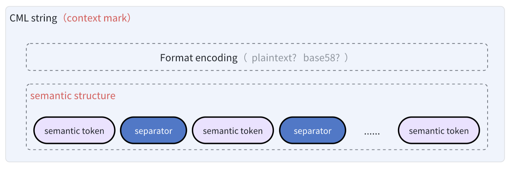

CML
Context Mark Language (CML) is a new markup architecture designed for the AI era, addressing the needs of contextual markup with a structure that aligns with natural semantics.
The core feature of the Context Mark Language syntax is its use of a single string to represent multi-dimensional, composable, and implicitly contextual semantic structures. It offers a simpler experience for writing, embedding, transmitting, storing, and computing.
Latest Version: 1.0.0-beta.1
Paper
CML elaborates on the Context Structure Expression model. For details, refer to the paper:
- DOI 10.5281/zenodo.15255534.
- English version：CSE:A Unified Modeling Framework for Semantic Contextual Markup
- Chinese version：CSE模型：上下文语义标记的统一建模框架
- Semantic Architecture
- Semantic Structure
- Markup Format
- Encoding Rules
- Minimal Completeness
Context Mark Language can express semantic contextual structures in an extremely concise way.
The CML string, used to mark knowledge contexts, is composed of a series of two types of semantic primitives: semantic tokens and relation separators.
- Semantic Token: The basic unit for describing contextual semantics in CML. It can be any form of text fragment. It corresponds to the concept of a token in the LLM domain, but it is not lexical in nature—instead, it carries abstract dimensions of natural semantics.
- Relation Separator (
:,.,@,+,space): Used to express the semantic relationships of contextual structure between semantic tokens. It implicitly declares the weighted prioritization of these relationships.
By freely combining these semantic primitives and encoding them, a complete CML string is formed.
Expression Rules
CML uses a linear structure to describe semantic relationships (which is easy to embed).
Assuming we use <semantic_token> to represent a semantic token and <separator> to represent a relation separator, the rules can be roughly defined as follows:
- Each semantic token (
<semantic_token>) must be connected by one and only one relation separator (<separator>). - Semantic tokens and relation separators always appear in an alternating pattern:
<semantic_token><separator><semantic_token><separator>...<semantic_token>.
CML revolves around three core semantic needs—priority expression of tokens, structural extensibility, and logical orthogonality. From these, five highly expressive and composable semantic structure primitives are abstracted, forming the fundamental units for constructing all logical semantic relationships.
These five structural primitives are categorized into Basic Structures, Composite Structures, and Combinatorial Structures. Basic structures describe simple relationships among semantic tokens and can serve as components of composite structures. Combinatorial structures are higher-level containers that can connect any semantic tokens, basic structures, or composite structures.
a. Supplementary RelationshipBasic Structure
The semantic object on the right supplements, explains, or restricts the one on the left. It usually acts as a semantic addition without altering the original structure.
f:A∋B∋CExpressed using the @ symbol. The further left, the higher the priority, indicating greater weight.
For example:
name@identity@organizationname@company@position
Both highlight "name" first, but declare different priority emphases overall.
b. Linear Progression RelationshipBasic Structure
An ordered, stepwise semantic relationship. It can express directional flows like progression, transformation chains, causal chains, sequences, type refinement, or lifecycles.
f:A→B→CExpressed with the . symbol. Whether the left side has slightly higher weight depends on LLM interpretation based on actual semantic tokens.
For example:
Organism.Animal.Human— focuses on the subclassHuman.Product Design.Development.Operations— the semantic tokens clearly describe a lifecycle.
c. Parallel Set RelationshipBasic Structure
Multiple semantic elements in parallel, like a set, property group, or multi-branch description. No priority or order; elements can be rearranged freely.
f:{A, B, C}Expressed with the + symbol. No priority difference in weight.
For example:
Man+Woman— both equally describe the concept ofHuman.Name+Age+Username— registration attributes of an account.
d. Mapping RelationshipComposite Structure
A composite correspondence between one semantic structure and another, in key-value form. Both sides can use any combination of the three basic relationships to support two-dimensional semantic expression.
f(A,B) ↦ f(C,D,E)Expressed with the : symbol. It's like a key-value pair, but more flexible—both key and value can be basic structures, not just semantic tokens.
<key-context-struct>:<value-context-struct>Examples of valid mapping structures:
Website:doc-war.comWebsite@doc-war.com:Document Battlefield@Contribute Judgment ValueAI+LLM:ChatGPT+Claude@v3.7ask.answer:What is CML?.CML is a semantic structure language aligned with natural semantics
Special Constraint
CML does not support nested mappings to avoid increasing parsing complexity. For example, expressions like User:ZhangSan:Delete+Query are syntactically invalid.
e. Combination RelationshipCombine Structure
Multiple semantic structures combine into a new semantic whole without losing their original meaning. Conversely, they can also be decomposed. Essentially, this acts as a "semantic structure container" capable of computation.
f(A)+f(B) = f(A+B)
f(A) = f(A+B) - f(B)
Expressed using a space, which overlays two structures semantically.
Because space has the lowest semantic precedence and is not order-sensitive, it's also used as the overall operator in plaintext CML strings. Concatenating two CML strings with a space produces a valid CML string that retains original semantics.
plaintext(A)+space+plaintext(B) = plaintext(A+space+B)This feature of lossless restoration—free combination and decomposition—gives CML semantic computation properties, not just semantic expression. It lays a solid foundation for collaborative annotation workflows.
Special Constraint
Because space carries the responsibility of lossless computation, expressions like If User:ZhangSan how about, while syntactically valid, violate the principle of lossless combination. Once split and recombined, the position shift disrupts the original meaning.
Operator Precedence
Relationship operations work similarly to expression parsing in programming languages: a left-to-right lexical scan determines the semantic operation order based on the precedence of relation separators.
CML defines a clear precedence to ensure consistency in semantic interpretation during annotation and inference.
Supplementary Relationshipa > Linear Progression Relationshipb > Parallel Set Relationshipc > Mapping Relationshipd > Combination RelationshipeBased on semantic expression, two standard CML string marking patterns are defined. The core difference lies in at
which stage and in what form the semantic token (semantic_token) itself is marked.
Natural Language Format
The natural language format offers a plain text writing experience for document engineers, suitable
for human-readable scenarios.
Semantic tokens (semantic_token) are wrapped using backticks (inline code) in Markdown syntax.
Document engineers can use WYSIWYG Markdown editors as a plain text editing environment for semantic structures,
allowing for quick and intuitive editing.
For example, writing a plain text string in Markdown:
`token1`.`token2`@`token3`+`token4` `token5`:`token6` It automatically renders into the following natural semantic effect, making it clear at a glance:
token1.token2@token3+token4
token5:token6
Line Breaks
In natural editing, for readability, humans tend to break long strings into multiple lines rather than using spaces
exclusively. Therefore, CML editors should support symbol-equivalent compatibility, automatically converting various
line break characters like \n, \r\n, \r into spaces during plain
text parsing and storage.
Embedded Backticks
Since backticks have no escape representation, the plain text format follows the de facto standard in the Markdown
ecosystem: tokens containing backticks are wrapped with more backticks. For example, the token
console.log(`hello,${name}`) should be represented as follows.
```console.log(`hello,${name}`)```Encoded Format
CML strings with backticks (`), including plus signs and spaces, may cause unexpected parsing
boundaries and escape requirements in certain special scenarios. Other separators and internal token values may also
be unsafe in URLs, files, keys, or variable naming scenarios.
For example:
- Using backticks in template strings
- Using plus signs or spaces in URLs or regular expressions
- Using backticks in SQL statements or shell scripts
- Nesting with HTML or other formats, especially when the original text of
semantic_tokenitself contains backticks - ......
Therefore, for embedding, storage, parsing, computation, and
naming scenarios, CML defines a safer and more consistent encoded output format.
CML provides multiple encoding scheme options to enhance adaptability in short semantic scenarios,
large-scale semantic scenarios, and restricted transmission scenarios.
Encoding Modes
A CML string in any encoding format consists of two parts:
<rule_token><semantic_payload>. The first character expresses the rule
version, mapping protocol, and more specific encoding mode.
Rule Identifier
The rule identifiers corresponding to the standard rule set are limited to the 26 lowercase letters
a-z, reserving 26 combination positions. Uppercase letters are reserved and generally not used. Numbers
and other special characters will never be used as identifiers to ensure they are inherently safe for keys and
variable names.
Currently, only 4 standard rules are defined.
| Identifier | Protocol Version | Encoding Rule | Scenario |
|---|---|---|---|
| a | 1.0 | Double-layer Base58 encoding | Contains no special symbols, perfectly suited for short semantic scenarios |
| c | 1.0 | Double-layer Base64URL encoding, without =. |
Offers maximum encoding/decoding performance for large-scale semantic scenarios |
| q | 1.0 | Plaintext mixed encoding mode, overall Base64URL encoding of mixed semantic payload, without =.
|
Minimizes entropy increase while maintaining partial readability |
| p | 1.0 | Plaintext mixed mode, single-layer architecture, no overall encoding. | Minimal entropy increase, maximum information capacity, suitable for QR code and SMS scenarios |
Mnemonic Notes
- c corresponds to CPU abbreviation, focusing on CPU efficiency;
- q corresponds to QR code abbreviation, intended for QR code scenarios;
- p stands for plaintext;
- a is reserved for Base58, as it was the earliest designed mode, with the highest security universality.
Mode a
Mode a refers to protocol version 1.0 + double-layer Base58 encoding rule.
Example
The following is an encoding example of mode a.
`token1`.`token2`@`token3`+`token4` `token5`:`token6`Encoding the above plaintext CML string follows these steps:
- Sequentially extract
semantic tokensandrelationship separatorsfrom the original CML string - Encode each semantic token (excluding backticks) into bytes using UTF-8, then Base58 encode the byte stream to generate Base58 strings
- Reassemble using the original relationship separators
zyvFCwFv.zyvFCwFw@zyvFCwFx+zyvFCwFy zyvFCwFz:zyvFCwG1- Encode the entire string again with UTF-8 + Base58 to remove all special characters, obtaining the overall semantic payload
3EkzyE8r5SqnU6KSbLS98LVLJxFoNvskzaazkuEEryWminqaGwJz13YoatvfoRWoDyrofwUCQ- Finally, prepend the mode identifier
ato form the final CML encoded string
a3EkzyE8r5SqnU6KSbLS98LVLJxFoNvskzaazkuEEryWminqaGwJz13YoatvfoRWoDyrofwUCQThe decoding process uses the first character for mode routing, restoring the original plaintext format.
Mode c
Mode c refers to protocol version 1.0 + double-layer Base64URL encoding rule.
The process is identical to double-layer Base58 encoding, except the encoding method is changed to Base64URL, reducing the complexity from O(n² log n) to O(n).
| Encoding Method | Input Length | Output Length | Theoretical CPU Instructions | Estimated Time | Main Bottleneck |
|---|---|---|---|---|---|
| Base64 | 100KB | 133.3KB | ~200K | 0.1-0.5ms | Bit operations + lookup |
| Base58 | 100KB | 138KB | ~50M | 50-200ms | Big number division operations |
Mode q
Mode q refers to protocol version 1.0 + plaintext mixed encoding mode.
Mode q still follows a double-layer encoding architecture but minimizes unnecessary double encoding.
Compared to mode a and mode c, the key difference is the dynamic, automatic handling of
whether to encode at the token level rather than applying a uniform rule:
- The semantic payload supports
<plaintextToken><separator><encodedToken>mixed encoding - Plaintext is prioritized. For mixed
<encodedToken>, a!suffix indicates to the decoder that further decoding is needed. - If a token contains any CML separators (
@,.,+,:,space) or the encoding mark!(six characters total), it will be forcibly encoded. - Both token-level encoding and overall encoding use Base64URL.
Example
For the original CML semantic relationship: `这是明文`@`这要编码！`, the plaintext string is:
`这是明文`@`这要编码！`Using mode c, the semantic payload before overall encoding is:
6L-Z5piv5piO5paH@6L-Z6KaB57yW56CB77yBUsing mode q, the semantic payload is:
这是明文@6L-Z6KaB57yW56CB77yB!Then overall encoding:
6L-Z5piv5piO5paHQDZMLVo2S2FCNTd5VzU2Q0I3N3lCIQFinally, prepend the mode identifier q to form the final CML encoded string:
q6L-Z5piv5piO5paHQDZMLVo2S2FCNTd5VzU2Q0I3N3lCIQMode p
Mode p refers to protocol version 1.0 + plaintext mixed mode without secondary encoding.
Mode p is a simplified version of mode q, removing the double-layer encoding architecture
to minimize entropy.
Same Example
For the original CML semantic relationship: `这是明文`@`这要编码！`
The plaintext string is:
`这是明文`@`这要编码！`Whether using mode p or q, the semantic payload after encoding is:
这是明文@6L-Z6KaB57yW56CB77yB!However, mode p does not perform overall encoding, simply prepends the prefix to form the final CML encoded string:
p这是明文@6L-Z6KaB57yW56CB77yB!The five relationship delimiters are derived from an abstract refinement of the semantic expression structures in natural language, as well as a deep consideration of expression ambiguity and structural controllability.
Natural Language Reference
The five relationship delimiters defined by CML are based on the most fundamental semantic structures implicit in natural language (modification, succession, parallel, contrast, combination). These five semantic structures are independent of the grammatical expression styles of specific natural languages such as Chinese, English, French, or Japanese.
Natural Language Examples:
Example: The manA who is tallB and wearing a hatC (A←B←C)
Example: He gets upA, dressesB, and goes outC (A→B→C)
Example: I like applesA, bananasB, and orangesC {A, B, C}
Example: ChatGPTA, ClaudeB, and DeepSeekC are all AID, also called LLME
(A+B+C ↦ D+E)
Example: This flowerA + is beautifulB = This flower is beautifulA+B
(A+B=AB)
In theory, the combination of these five primitive relationships can express the vast majority of logical relationships, offering considerable completeness.
Semantics Within Tokens
For logical relationships such as exclusion, quantifier ranges, or nested mappings, CML does not provide native support. Instead, these are delegated to the token layer, allowing flexible expression in conjunction with supplementary relationships to avoid structural pollution, which could introduce complexity in priority operations and human-readable comprehension.
This is because tokens themselves can also express structure.
Natural Language Example: "His age is approximately 18~25 years old."
Annotation:
❌ `age`:`range`:`18-25`
(Illegal nesting and unnecessary, can be merged forward or backward)
❌ `age`:`>18`+`<25`
(No need to split so finely)
✅ `age`:`range:18-25`
(Nesting within the token aligns with natural semantics)
✅ `age`:`18-25`
This reflects the principle of minimalism in structure:
The CSE paradigm does not attempt to explicitly resolve all structural semantic ambiguities in advance. Instead, during actual expression, it leverages the semantic tokens connected by relationship delimiters as the context for relational semantics, allowing the LLM to infer the most reasonable semantic relationships and corresponding priority weights.
Core Value of Explicit Structure
Advocating the use of semantic structure expression within tokens also reflects the core value of CML in explicit encoding.
The reason CML is close to natural language but not equivalent to pure natural language lies in its necessity for declaring important semantics and its expressive requirements. Compared to the complete uncontrollability of token segmentation in natural language inference, the essence of explicit segmentation is to break down semantics into vertical hierarchies and horizontal relationships, thereby eliminating relational ambiguities and ultimately enhancing controllability and interpretability.